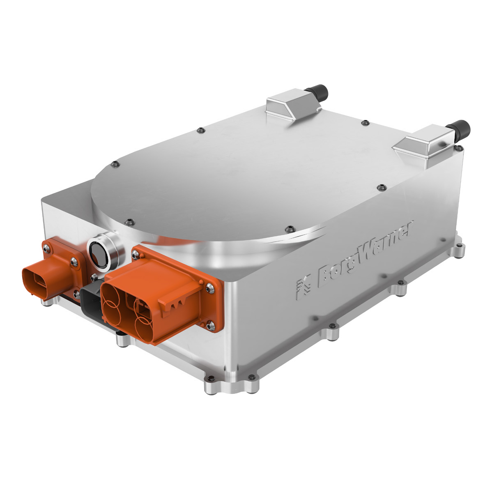
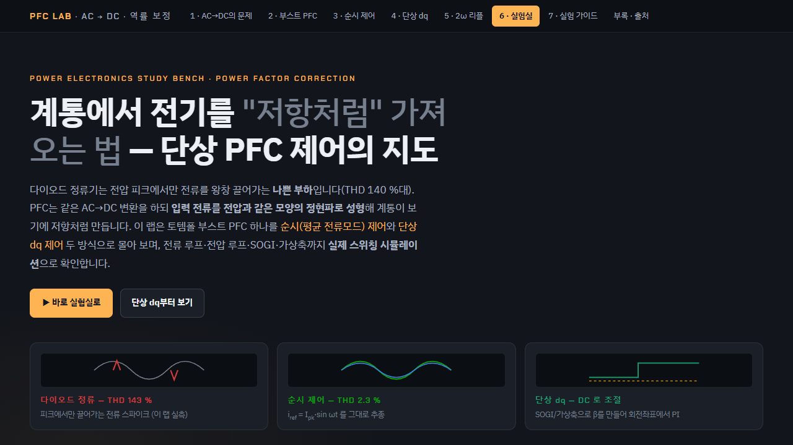
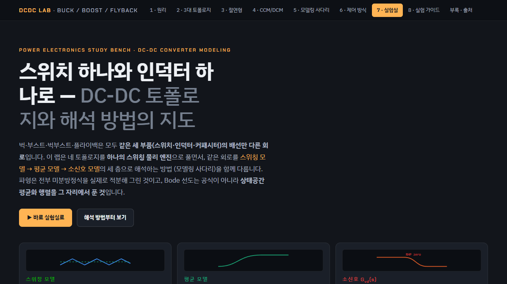
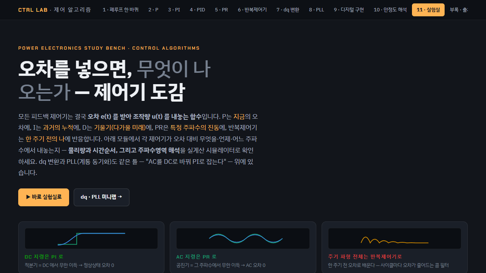

03 / On-Board Charger
OBC
OBC는 차량의 교류 전력을 배터리 충전에 맞는 직류 전력으로 변환하는 장치입니다. 양방향 OBC에서는 차량 전력을 계통 또는 외부 부하로 공급할 수 있습니다.
시스템 아키텍처
제품 참고 이미지

충전에서 양방향 전력변환까지
충전 때는 계통 교류를 배터리 전압에 맞는 직류로 바꿉니다. 양방향 운전에서는 같은 전력단을 반대 방향으로 돌려 배터리 에너지를 계통(V2G)이나 외부 부하(V2L)로 보냅니다.
전력변환 구성
PFC 단계
입력 전류 파형과 DC Link 전압을 제어합니다. 단상/3상 입력과 용량에 따라 토폴로지가 달라집니다.
절연형 DC/DC 단계
고주파 변압기로 절연하고, 배터리 전압 범위에 맞춰 전력을 넘깁니다.
제어·보호
전압·전류·온도·인터록 신호로 모드 전환, PWM, 이상 정지와 재기동을 처리합니다.
운전 모드
G2V
계통 교류 전력으로 차량 배터리를 충전하는 기본 모드.
V2G
배터리 전력을 계통으로 보내는 운전. 계통 전압·주파수 확인, 동기, 보호 조건이 필요합니다.
V2L
배터리 전력으로 외부 부하를 직접 구동하는 운전. 부하 기동 전류와 보호·정지 조건이 관건입니다.
검증 흐름
요구사항과 상태
충전·방전·대기와 예외 조건을 상태 전이, 입력 신호, 허용 시간, 안전 상태로 나눕니다.
모델과 코드
경계 조건을 모델에서 먼저 돌리고, 생성 코드와 제어보드 동작을 순서대로 비교합니다.
시험과 변경
문제가 나오면 로그와 파형으로 조건을 고정하고, 수정 후 같은 시나리오로 회귀 시험합니다.
업무
- 충전·방전·대기·보호 동작을 상태 전이와 인터페이스 조건으로 나눠, 입력 신호와 출력 동작의 대응을 검토했습니다.
- V2G: 계통 확인 → 동기 → 전력 공급 → 이상 정지 → 재기동 조건을 시나리오별로 확인했습니다.
- V2L: 외부 부하의 기동 전류, 전압 강하, 보호 동작과 정지 조건을 확인했습니다.
- 모델 → 생성 코드 → 제어보드 순으로 동작을 비교하고, 변경 후에는 같은 보호 시나리오로 회귀 시험했습니다.
연계 학습 화면
PFC·절연형 DC/DC·제어 알고리즘 학습용 시뮬레이션 화면입니다. 차량 OBC 시험 캡처는 아닙니다.

토템폴 PFC 순시 제어 vs 단상 dq 제어, 입력 전류 THD 143 % → 2.3 %.

DC Link에서 배터리 전압 범위로의 절연 변환.

상태·전류·전압 제어 루프의 관계.
시스템도는 일반적인 양방향 OBC 구성입니다. 고객·차종 정보, 회로·소프트웨어 구현, 제어 파라미터, 로그는 싣지 않았습니다.
참고: TI — HEV/EV OBC & DC/DC converter design resources · TI — Bidirectional OBC reference design